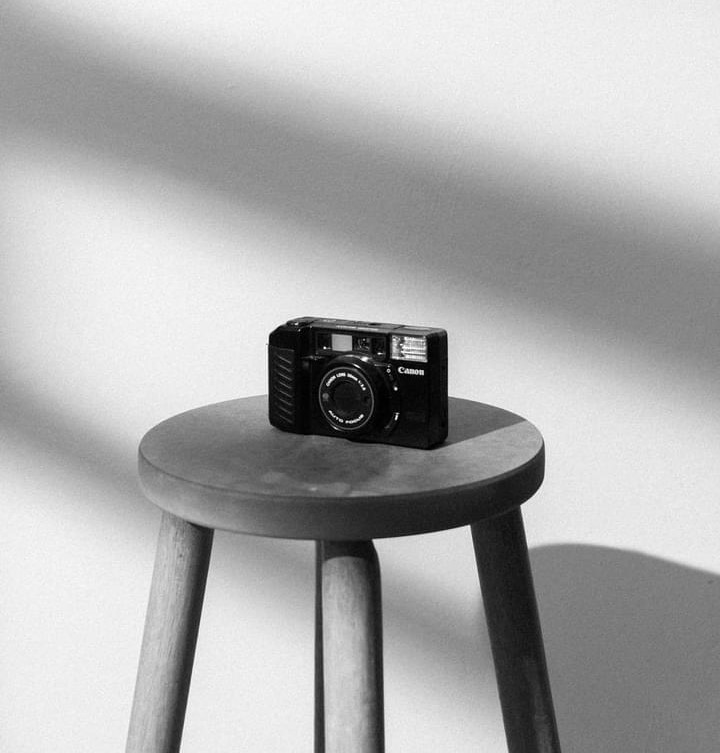
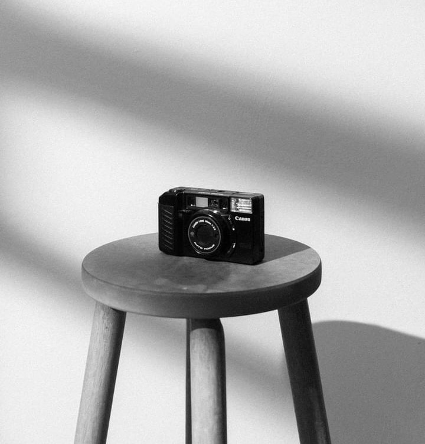

Trying to Seize the Moment
PORTFOLIO
Photography is a powerful art form that allows us to capture and preserve memories, tell stories, and convey messages. It has become an integral part of our daily lives, and with the rise of digital technology, it has become more accessible than ever before.Unlock a world of beauty and creativity through the lens of a camera, whether you’re a professional photographer or an avid photo enthusiast. Discover the wonders that await as you capture moments and unleash your artistic vision.


 
